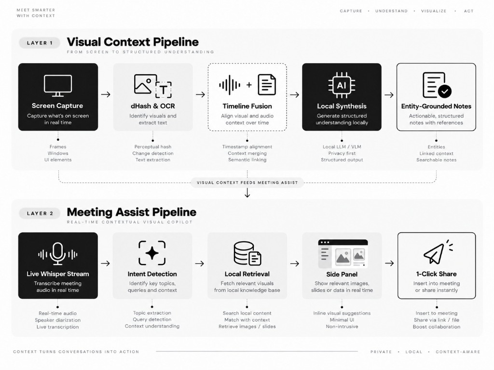

Team TUF · Track 01 · Automate Workflow with Meetily.ai · SCTCE
Meetily today is audio-only. We add two layers: visual context so it can see the meeting, and meeting assist so it can help in the moment.
Meetily has strong audio context. Meetings also have a screen - and that visual context is missing today.
Two layers on Meetily: first give it eyes (visual context), then give it hands (meeting assist).
Prove the core loop - not every feature.
/assets set (architecture, algorithms, patterns) via semantic match.Open-source, local-first components across both feature directions.
From live discussion and screen sharing to real-time visual assistance and complete meeting notes.

From Visual Copilot → full meeting action agent.